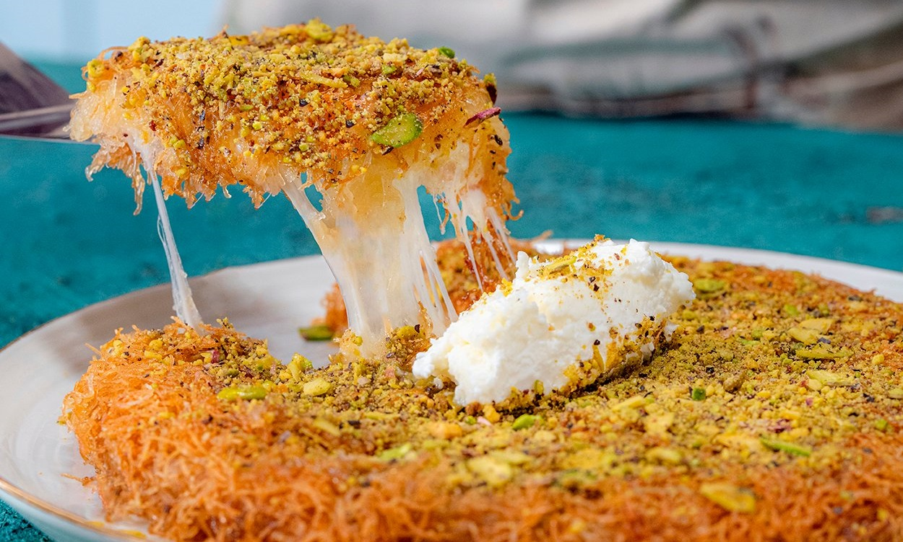

Turkish cuisine
Turkish cuisine is a very diverse and wide cuisine. Let's take a look at a few examples of Turkish cuisine, which is unique in the world and whose culture dates back to very ancient times.
Adana Kebap
Adana Kebap is a traditional kebab variety originating from the Adana province. It is made with seasoned ground beef and is typically served with grilled vegetables.


Hünkar Beğendi
Hünkar Beğendi is a dish associated with Ottoman cuisine. This meal, containing lamb meat, is served on a bed of roasted eggplant puree.
Künefe
Künefe is a dessert hailing from Gaziantep cuisine. It consists of fine shredded phyllo dough, cheese, and syrup. It is baked and served hot.

| Meal | Calorie Value | Origin Date | Region |
|---|---|---|---|
| Adana Kebab | 500 kcal | 1930s | Adana |
| Meal | Calorie Value | Origin Date | Region |
|---|---|---|---|
| Hünkar Beğendi | 600 kcal | 18th century | Ottoman Cuisine |
| Meal | Calorie Value | Origin Date | Region |
|---|---|---|---|
| Antakya Kunefe | 450 kcal | 16th century | Antakya |
Turkiye is a country with a lot of unique tastes. Do you want to know what else is there?
Stand by for other recipes. Follow us!
.